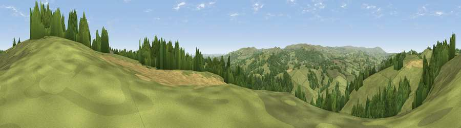

Viewpoint near Moretonhampstead
#11597 in England · top 21% of its area beats it · near MoretonhampsteadThe view, rendered

A 360° render of this exact spot computed from the terrain model, tree cover and land cover — summer colours, afternoon light, calibrated against photographs of famous viewpoints. Real trees, hedges and buildings will differ in detail.
The panorama
Grey silhouette: terrain skyline in each direction (720 bearings, Earth curvature and refraction included). Dashed green: skyline with trees (+15 m) and buildings (+8 m) as obstacles. Blue strip: how far the ground is visible on each bearing.
Where the view opens
Wedge length = distance to the farthest visible ground on that bearing (vegetation-aware). Rings at 10, 25 and 50 km.
What fills the view
59% grassland · 34% woodland · 5% cropland · 3% shrubland
Angular shares of the visible panorama (visual magnitude), not map area. Landscape diversity 0.41 (0–1 Shannon).
Key numbers
More beautiful places nearby
The staircase of upgrades: each row has a higher view potential than everything closer. Driving times are estimates from straight-line distance, calibrated against real road routing — check an actual route before setting out.
| Place | Direction | Drive | Score |
|---|---|---|---|
| Viewpoint near Moretonhampstead | N · 3 km | ~8 min | 76.3 |
| Viewpoint near North Bovey | WSW · 5 km | ~11 min | 77.8 |
| Viewpoint near North Bovey | WSW · 5 km | ~12 min | 79.3 |
| Cairn | SSW · 6 km | ~13 min | 79.8 |
| Viewpoint near Haytor Vale | S · 7 km | ~14 min | 80.1 |
| Viewpoint near Buckland in the Moor | SSW · 13 km | ~23 min | 80.7 |
| Viewpoint near Kenton | ESE · 15 km | ~27 min | 82.9 |
| Viewpoint near Holcombe | ESE · 19 km | ~32 min | 83.3 |
50.65159, -3.73101 · source: screening · position refined by local search. Computed location — check access rights before visiting.